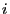
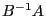
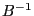
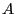

Next: GRBgetBasisHead Up: Advanced simplex routines Previous: GRBBinvColj
| int | GRBBinvRowi ( | GRBmodel | *model, |
| int | i, | ||
| GRBsvec | *x ) |
Computes a single tableau row. More precisely, this routine returns row  from the matrix , where  is the inverse of the basis matrix and  is the constaint matrix. Note that the tableau will contain columns corresponding to the variables in the model, and also columns corresponding to artificial and slack variables associated with constraints.
Return value:
A non-zero return value indicates that a problem occurred while computing the desired vector. Refer to the Error Code table for a list of possible return values. Details on the error can be obtained by calling GRBgeterrormsg.
Arguments:
model: The model. Note that the model must have a current optimal basis, as computed by GRBoptimize.
i: The index of the desired tableau row.
x: The result vector. The result will contain one entry for each non-zero value. Note that the result may contain values for slack variables; the slack on row i will have index cols+i, where cols is the number of columns in the model. The user is responsible for allocating the ind and val fields to be large enough to hold the largest possible result. For this routine, the result could have one entry for each variable in the model, plus one entry for each constraint.